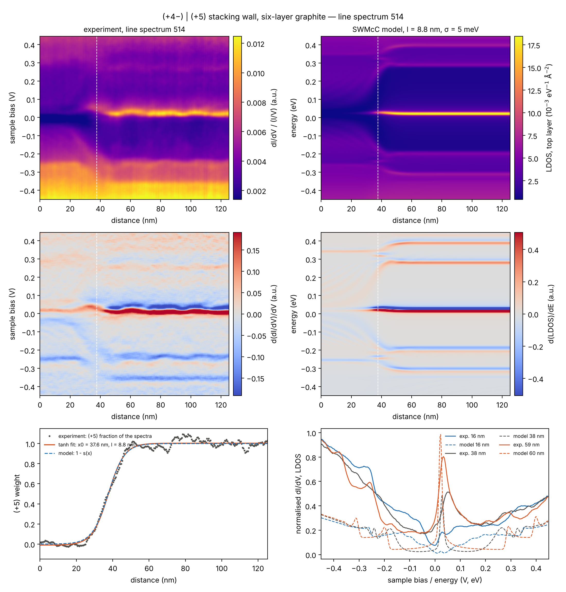
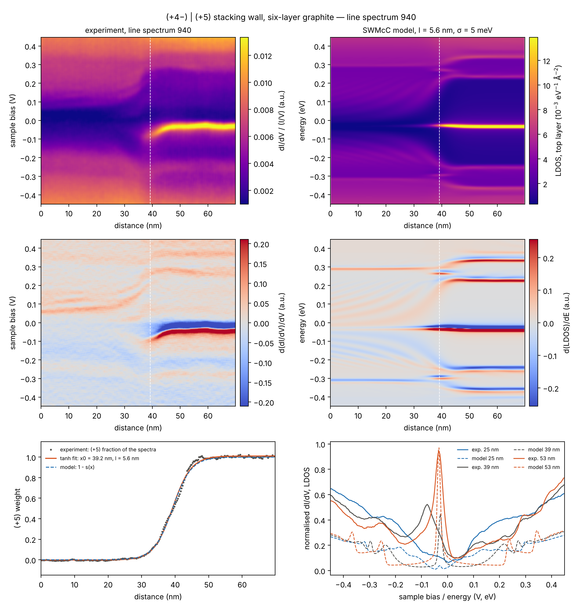
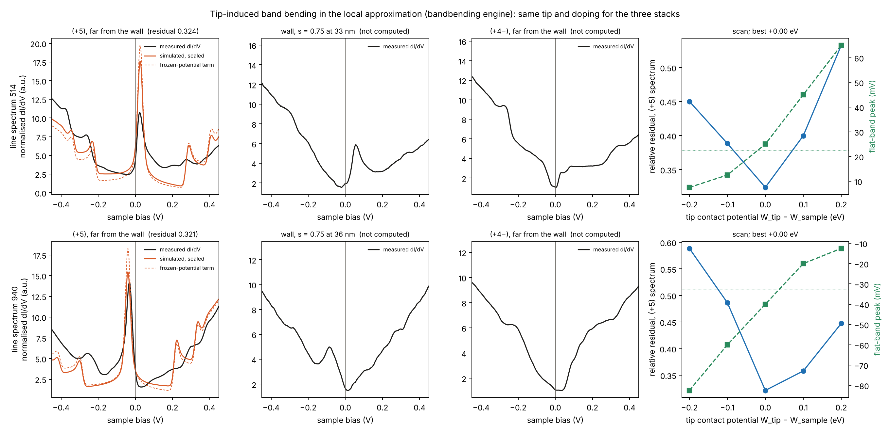
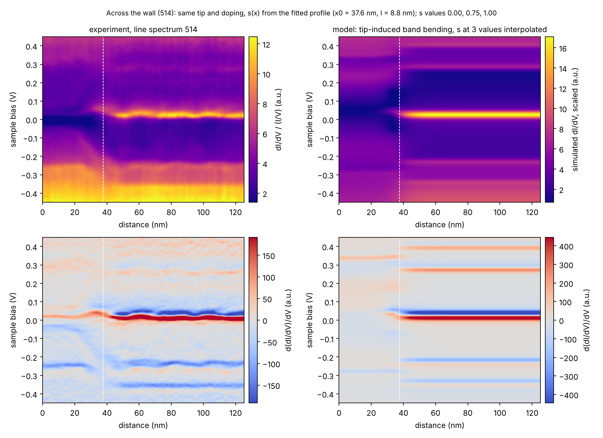
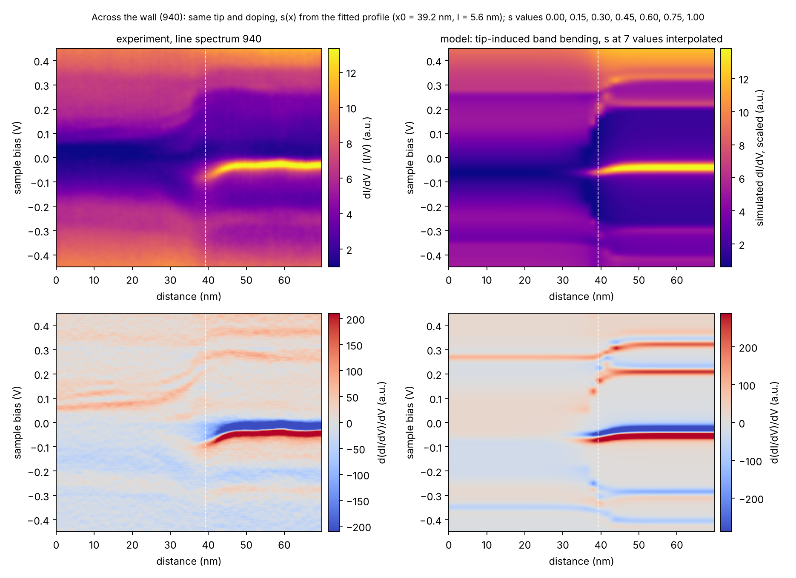
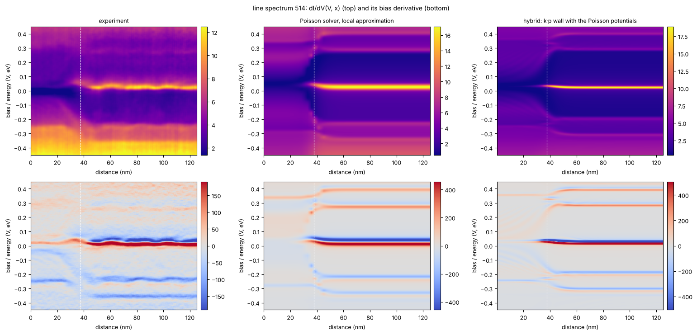
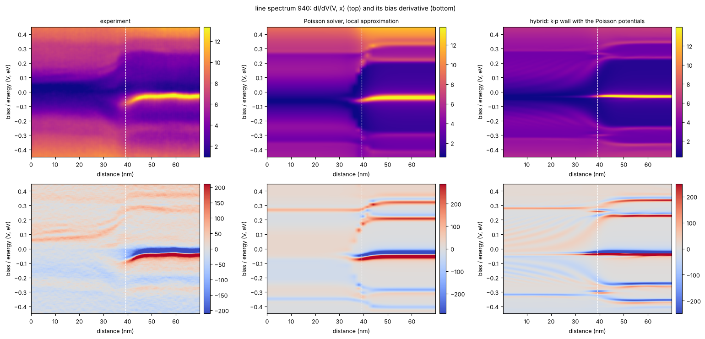
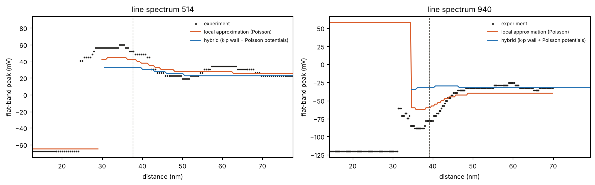

Top-surface LDOS across a single-layer stacking shift
The Hamiltonian of hexalayer rhombohedral graphite is interpolated into that of the
stacking fault across one wall, with the wall length taken from the measured dI/dV line spectra
(flake MK_ABC_FLG_25, 9 K). Code: stacking_wall.py, stacking_wall_figure.py.
Model
The k·p Slonczewski–Weiss–McClure Hamiltonian is linear in the momentum from the valley centre, HS(p) = CS + pxXS + pyYS, for both stackings S = (+⁵) ABCABC and (+⁴−) ABCABA. Across the wall every matrix element that differs (the γ1 dimer of the top layer, γ3, γ4, γ2, γ5 and the Δ′ terms of layers 5 and 6) follows one profile:
For every conserved ky the problem is diagonalised in plane waves along the wall normal (cell 480 nm, |q| ≤ 0.15 Å⁻¹, 229 waves per orbital; the second wall that periodicity needs is 240 nm away). The layer-resolved LDOS(E, x) sums the ky mesh (step 0.001 Å⁻¹) with spin, both valleys and a Gaussian of σ = 5 meV. Parameters of McEllistrim et al.: γ0 = 3.090, γ1 = 0.390, γ2 = -0.017, γ3 = 0.309, γ4 = 0.068, γ5 = 0.038, Δ′ = 0.025 eV. Without a wall the layer-summed LDOS equals the k·p DOS of the repository to 1 %, and a monolayer gives 2|E| / (πħ²v²) to 10⁻⁴.
Wall length from the measurements
Every spectrum of a line is written as (1 − s) S(+⁴−)(V) + s S(+⁵)(V) with the end-member spectra averaged far from the wall (least squares over −0.3 … 0.3 V), and s(x) is fitted with the same tanh step. The flat-band weight within ±25 meV gives the same lengths within 0.5 nm. The model energy axis is shifted rigidly so that its (+⁵) flat band sits on the measured one.
| line spectrum | wall centre x0 | l (tanh) | 10–90 % width | flat band (+⁵) | model shift |
|---|---|---|---|---|---|
| MK_ABC_FLG_25_9K_2023_08_03_16_33_49_514.sm4 | 37.6 ± 0.2 nm | 8.8 ± 0.3 nm | 19.4 nm | +23 mV | +17.5 meV |
| MK_ABC_FLG_25_9K_2023_10_25_17_00_17_940.sm4 | 39.2 ± 0.0 nm | 5.6 ± 0.1 nm | 12.2 nm | -32 mV | -37.5 meV |
Figures


What the model reproduces, and its limits
- Flat-band peak on the (+⁵) surface; on the (+⁴−) surface it is absent and sits in layer 2 (layer-resolved
maps in
examples/stacking_wall_layers_*.png). The (+⁵) gap faces the V-shaped surface band of (+⁴−). - Quasiparticle-interference fringes fan out from the wall on the (+⁴−) top layer only, as in Fig. 2 and 3 of the paper; none inside the (+⁵) gap.
- The fitted l is an apparent LDOS width that includes the lateral extent of the surface states, not the structural soliton width.
- Linear interpolation passes through a midpoint with both dimer couplings at γ1/2 rather than the saddle-point stacking of the real shift path; no layer-dependent doping is included.
- The k·p trigonal-warping legs extend to large momentum, so the LDOS is reliable within about ±0.4 eV.
Why the flat band bends at the wall
Close to the wall the flat-band peak does not only fade, it moves: in spectrum 514, where the band is mostly empty and seen at positive bias, it climbs from +22 mV to about +55 mV; in spectrum 940, where it is mostly filled and seen at negative bias, it sinks from −32 mV to about −88 mV. The electrostatics-free model shifts it by only +5 meV in both cases, so the bend is not in the band structure. It is the tip gating the sample.
The tunnel junction is a capacitor with the sample as one plate. How much of the bias drops across the vacuum gap and how much inside the sample depends on how easily the surface under the tip can pile up or shed charge. A large density of states at the Fermi level means a tiny change of potential moves a lot of charge, so the surface screens the tip almost perfectly and the whole bias falls across the gap. The flat band is exactly such a reservoir, about 10¹³ states per cm² within some 10 meV: far from the wall the top layer behaves like a metal plate, the bands inside do not move, and the peak sits at its true energy. At the wall the flat-band states leave the top layer (they sit in layer 2 on the stacking-fault side). What is left under the tip is the Dirac cone of the (+⁴−) surface near its node, a hundred times fewer states. The surface turns from a metal plate into a thin semiconductor, the field of the tip now reaches into it, and a fraction f of the bias drops inside the sample: the local bands shift rigidly by f·eV.
The direction follows the sign of the bias, not the filling of the band. At positive sample bias the tip is negative with respect to the sample; it pushes electrons away and lifts the local bands, so a state that is truly at EFB is only reached at a larger bias and the peak appears higher. At negative bias the tip pulls electrons in, the bands bend down and the peak appears lower. The filling of the flat band only decides which sign of bias is needed to see it: an empty band is seen at positive bias and bends up, a filled one at negative bias and bends down. The effect feeds back on itself, because the bending moves the peak further from zero bias, where it is measured, so Vapp = EFB / [e(1 − f)]. Both spectra give the same f ≈ 0.6 where the peak has lost two thirds of its height, with opposite bias; in 940 a feature at +69 mV on the stacking-fault side bends up by 50 to 90 mV next to the same wall where the flat band bends down, which rules out a fixed offset such as the polarization of the (+⁴−) stack.
| line spectrum | flat band far from the wall | at one third peak height | shift | f = 1 − Vfar/Vapp |
|---|---|---|---|---|
| 514 (band mostly empty) | +22 mV | +49 to +60 mV | +27 to +38 mV | 0.54 to 0.62 |
| 940 (band mostly filled) | −32 mV | −88 mV | −56 mV | 0.63 |
Scale: a 0.7 nm gap gives Cgap = ε₀/d ≈ 13 mF m⁻². The intact flat band has Cq = e²D ≈ 1.6 F m⁻², so f ≈ 0.01 and the bending stays below 1 mV: the band is pinned. f ≈ 0.6 needs Cq ≈ 9 mF m⁻², i.e. D(EF) ≈ 5 × 10¹² eV⁻¹ cm⁻², the value of the (+⁴−) surface cone 10 to 20 meV from its Dirac point. The sign reversal between −30 and +70 mV in spectrum 940 also puts the flat-band voltage of the junction, set by the work-function difference of tip and sample, within a few tens of mV of zero.
Self-consistent tip-induced band bending (bandbending engine)
Three laterally uniform six-layer stacks under the same tip, each solved self-consistently
(Hartree + γ0/γ1 tight binding, GrapheneMultilayer of the
bandbending engine): the (+⁵) stack far from the
wall, the wall itself with the top dimer shared between the (+⁵) bond (weight 1 − s) and the (+⁴−) bond
(weight s, s = 0.75 at the position of the bend), and the (+⁴−) stack. The wall Hamiltonian closes
a bond loop whose flux is the phase of the structure factor, so it is evaluated with a complex Hamiltonian
averaged over that phase (WallTB in stacking_wall_tibb.py; it reproduces the
engine's end members exactly and a brute-force zone sum to 1 %). Tip radius 20 nm,
separation 0.7 nm, barrier 4.6 eV, 9 K, Gaussian
width 10 meV of the tight-binding occupation and LDOS (the γ0/γ1 flat band is
6 meV wide, the measured one 26 mV), lock-in 3.75 mV; 90 nm SiO₂ over the
grounded Si. The doping is set from the measured flat-band energy of the (+⁵) side (the isolated stack is
neutral with EF that far from its flat band); the fixed charge per layer this implies is used
unchanged for the wall and the (+⁴−) stack, and the tip contact potential Wtip − Wsample
is the value, scanned in 0.1 eV steps, at which the simulated (+⁵) spectrum (tunneling_spectrum:
frozen-potential term plus band-bending term) is closest to the measurement far from the wall, one scale
factor free.
| line spectrum | contact potential | EF − ECNP | flat band (+⁵): measured / simulated | flat band at the wall: measured / simulated | U1(apex) − U1(far) at the peak: (+⁵) / wall / (+⁴−) | residual (+⁵) / wall / (+⁴−) |
|---|---|---|---|---|---|---|
| 514 | +0.00 eV | -23 meV | +23 / +25 mV | +56 / +45 mV | +3 / +4 / -16 meV | 0.32 / 0.34 / 0.38 |
| 940 | +0.00 eV | +32 meV | -32 / -40 mV | -85 / -62 mV | -7 / -7 / +15 meV | 0.32 / 0.36 / 0.27 |

What the calculation gives. With the tip and the doping fixed on the (+⁵) side, the simulated flat-band peak at the wall moves in the measured direction for both fillings: up by +20 mV in spectrum 514 (measured +34 mV) and down by -22 mV in spectrum 940 (measured -53 mV), so the sign follows the filling as observed, with 59 % and 43 % of the measured size. The tip, however, is not what moves it in this model: the band bending under the apex at the flat-band bias is +3 meV far on the (+⁵) side and +4 meV at the wall in 514, -7 and -7 meV in 940, so the tip-induced part of the shift is at most a few meV. At s = 0.75 the top layer keeps about a quarter of its flat-band states (4 × 10¹³ eV⁻¹ cm⁻² at EF with the 10 meV width), still a far better screen than the 0.013 F m⁻² of the vacuum gap, and the self-consistent solution confirms the pinning. The simulated shift comes instead from the charge balance of the wall stack: with the same fixed charge per layer, a top layer that has lost most of its flat-band states must move its bands to hold that charge (-8 meV in 514, +11 meV in 940, up for the empty band and down for the filled one), and the remaining top-layer weight sits on the far flank of the band, which adds the rest. The frozen-potential term alone (dashed) reproduces the full simulated peak position.
The (+⁴−) side. The simulated (+⁴−) spectra have the measured V shape (residuals 0.38 and 0.27), but their minimum sits at +50 mV (514) and -62 mV (940) where the measured minima are at +4 and +34 mV: the same fixed charge per layer puts the (+⁴−) Fermi level 30 to 40 meV from its neutrality point, while the real stacking-fault region sits near neutrality because its compensating charge can move into the buried flat band. The per-layer charge was the only way to place the (+⁵) flat band at the measured energy in this γ0/γ1 model (substrate traps alone pin it at EF); transferred to the other stacks it overstates their band offsets, so the intrinsic shift it produces at the wall is an upper estimate.
Across the wall. The wall stack was then solved at s = 0.15, 0.30, 0.45, 0.60, 0.75 and 0.90 with the same tip and doping (50 mV bias steps), and the simulated top-layer dI/dV was placed along the measured line through the fitted profile s(x) = [1 − tanh((x − x0)/l)]/2, interpolated linearly between the s values with one global scale. The simulated maps reproduce the sequence of the measurement: the flat band of the (+⁵) side bends up (514) or down (940) as it fades into the wall, the (+⁵) gap edges at ±0.2 to 0.3 V give way to the V-shaped spectrum of the (+⁴−) side, and there are no fringes, since the local approximation has no lateral scattering. Two differences stand out: the simulated flat band disappears over a shorter distance than the measured one, because in the γ0/γ1 model the top layer keeps most of its flat-band weight until s ≈ 0.75, and the simulated (+⁴−) side keeps the Dirac-point offset discussed above.
| s | peak 514 / height | peak 940 / height |
|---|---|---|
| 0.00 | +25 mV / 1.00 | -40 mV / 1.00 |
| 0.15 | +30 mV / 0.89 | -48 mV / 0.91 |
| 0.30 | +35 mV / 0.76 | -52 mV / 0.80 |
| 0.45 | +40 mV / 0.62 | -58 mV / 0.65 |
| 0.60 | +45 mV / 0.46 | -62 mV / 0.47 |
| 0.75 | +45 mV / 0.28 | -62 mV / 0.28 |
| 0.90 | -65 mV / 0.17 | +58 mV / 0.20 |
Simulated flat-band peak of the wall stack against the (+⁴−) weight s, with its height relative to the (+⁵) stack; beyond s ≈ 0.8 the top-layer peak is gone and the maximum found is another feature.


Hybrid: the wall model with the Poisson potentials
The two calculations are complementary: the k·p wall model has the wall and its fringes but no electrostatics,
the Poisson solver has the electrostatics but, being axisymmetric, no wall. The notebook
examples/stacking_wall_hybrid.ipynb joins them: it reads the Poisson outputs, refers the far-field
layer potentials of every stack to the common Fermi level, Vl = Ufar,l − μ0, places them
along the measured line through the fitted profile s(x), and feeds them into the k·p wall model as
position-dependent on-site energies (layer_potential_profile of stacking_wall.ldos_wall).
The tip-induced part of the potential moves with the tip and is left out of the maps (the notebook adds it at
chosen tip positions on request). The fringes of the (+⁴−) side return, together with the band shift of the
stacks.
At the position of the measured wall spectrum the flat-band peak sits at +56 mV measured, +45 mV in the local approximation and +33 mV in the hybrid for 514; -85, -62 and -32 mV for 940. The hybrid bends less than the local approximation although it uses the same potentials: the top-layer potential of the stacks moves from +23 to +58 meV (514) and from -32 to -77 meV (940) between s = 0 and 0.75, and in the γ0/γ1 model the top-layer flat band is a pure layer-1 state that takes the whole shift, while in the k·p model the flat-band state near the wall spreads into the layers whose potentials barely move and follows only part of it.



Reading. In the local approximation the self-consistent tip-induced band bending is too small to bend the flat band by the measured 35 to 55 mV while the peak is still visible; for that the density of states at EF under the tip would have to fall to the (+⁴−) level, about 5 × 10¹² eV⁻¹ cm⁻², and only on the (+⁴−) stack itself does the tip reach 15 to 30 meV of bending. What the local approximation cannot hold is the tip's field reaching across the wall into the (+⁴−) region, where screening is weak, while the tip sits over the fading flat band; that lateral problem, a Poisson solution with the wall in it, is the natural next step and is outside the axisymmetric engine. The fit of the (+⁵) spectra leaves the contact potential within about ±0.05 eV of zero, consistent with the sign reversal of the bend between the two measurements.